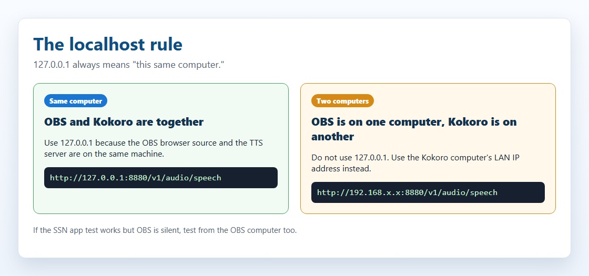
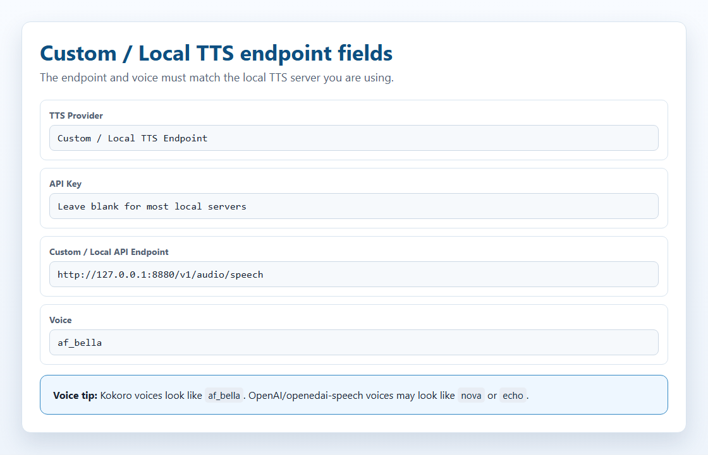
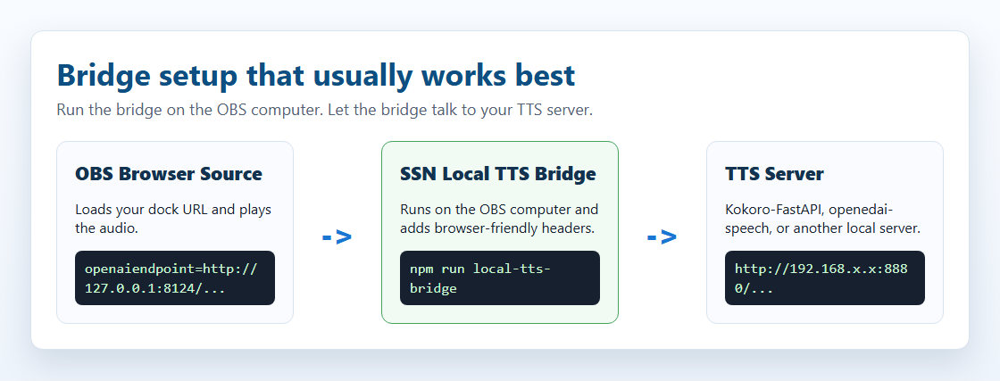
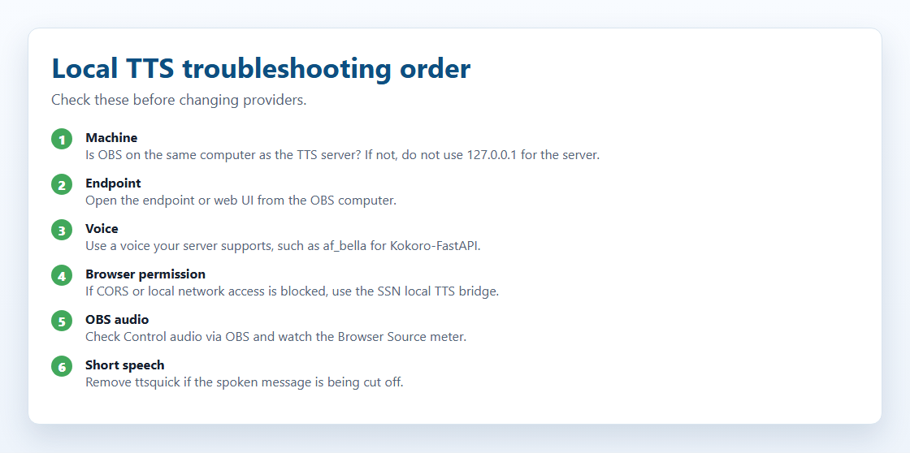

Read your live chat aloud with local AI voices. Start with the no-install option, then use a local server only if you need it.
Social Stream Ninja can read chat messages out loud using local AI text-to-speech. "Local" can mean two things: the voice runs inside the browser, or you run a small TTS server on your own computer.
There are two approaches:
Several high-quality AI voices are built directly into Social Stream Ninja. They run in your browser using WebAssembly or ONNX — no server, no Docker, no install.
Just add a URL parameter and go.
Run a local TTS server on your machine and point Social Stream Ninja at it. Gives you more voice options, voice cloning, and server-side control.
Uses Social Stream's built-in OpenAI-compatible endpoint support.
This is the shortest path for most streamers:
&speech=en-US&ttsprovider=kokoro or &speech=en-US&ttsprovider=kitten to your dock.html URL.Testing local TTS. Wait for first-time model downloads if using Kokoro or Piper.This is the most common local TTS mistake.
localhost and 127.0.0.1 always mean "this same computer." If OBS is on one computer and Kokoro is on another computer, 127.0.0.1 inside the OBS URL points to the OBS computer, not the Kokoro computer.

127.0.0.1 only when the TTS server is on the same computer as the page playing audio. If the server is on another computer, use that computer's LAN IP address.| Your setup | Endpoint to use |
|---|---|
| OBS and Kokoro run on the same computer | http://127.0.0.1:8880/v1/audio/speech |
| Kokoro runs on another computer on your home network | http://192.168.x.x:8880/v1/audio/speech, using the Kokoro computer's LAN IP |
| The SSN desktop app test button works, but OBS is silent | OBS still needs its own working endpoint. The app test does not prove OBS can reach the server. |
On Linux, macOS, and Windows, also make sure the firewall allows the port and Docker published the port with -p 8880:8880.
In the extension popup, open the TTS provider selector and choose Custom / Local TTS Endpoint. That shows the OpenAI-compatible local endpoint fields and the link back to this guide.

SSN treats a local/self-hosted TTS server like an OpenAI-compatible speech endpoint. The core flow is:
For ttsprovider=customtts, localtts, or openai, SSN sends a JSON POST to the configured endpoint:
CORS is a browser permission check. In plain terms: the TTS server has to tell the browser, "yes, this page is allowed to ask me for audio." If that permission is missing, the request may be blocked before Kokoro or another TTS server ever sees it.
dock.html in Chrome or OBS, CORS can matter.https://beta.socialstream.ninja/dock.html, Chrome may also block calls to local or private HTTP addresses.If the server does not allow browser requests, run the SSN local TTS bridge and point SSN at http://127.0.0.1:8124/v1/audio/speech. For OBS, the easiest setup is to run the bridge on the same computer as OBS.
| Response | SSN support | Notes |
|---|---|---|
| Binary audio | Yes | Best option. Return audio/mpeg, audio/wav, audio/ogg, audio/aac, or another browser-playable audio type. |
| JSON with audio URL | Yes | SSN checks url, audio_url, output_url, nested data.url, and the first data[] item. |
| JSON with base64 audio | Yes | SSN checks audio, audio_data, audioContent, b64_json, nested data fields, and data URLs. |
| Raw PCM | Only if wrapped | Return PCM as a WAV file or base64 WAV. A browser audio element cannot reliably play raw PCM bytes directly. |
mp3 for small files and broad browser support, wav for local cloning servers and bridge testing, and opus only when the server and browser both support it.
SSN does not currently do progressive playback for custom/local TTS endpoints. It waits for the response blob or JSON audio payload, then plays it. Some upstream servers expose streaming endpoints, but SSN's current OpenAI-compatible path buffers before playback.
Practical result: keep chat TTS snippets short. Streaming support would need a separate playback path using streamed WAV/MP3 chunks, MediaSource, WebCodecs, or a server-side mixer.
These engines are bundled inside Social Stream Ninja and require no installation. They run in the browser using WebAssembly (WASM) or ONNX Runtime.
| Provider | Quality | CPU Use | GPU/WebGPU | URL Parameter |
|---|---|---|---|---|
| Kokoro TTS | ⭐⭐⭐⭐⭐ Excellent | Medium | Faster with GPU | ?ttsprovider=kokoro |
| Piper TTS | ⭐⭐⭐⭐ Very Good | Low | CPU only | ?ttsprovider=piper |
| Kitten TTS | ⭐⭐⭐ Good | Very Low | CPU only | ?ttsprovider=kitten |
| eSpeak-NG | ⭐⭐ Robotic | Minimal | CPU only | ?ttsprovider=espeak |
Add &ttsprovider= and &speech= to your Social Stream dock.html URL:
Kokoro has 26 built-in voices. Specify one with &voicekokoro=:
Specify a voice model with &pipervoice=:
The Chrome extension, OBS browser source, and standalone Social Stream Ninja desktop app all use the same dock.html URL parameters for TTS. The important difference is where the sound is being made.
| Surface | Local TTS behavior | Audio capture |
|---|---|---|
| Chrome extension / OBS browser source | Browser fetch requires CORS from the local server, unless you use the SSN bridge. | Use OBS Browser Source with "Control audio via OBS". |
| Standalone desktop app | Uses the same provider settings. The app's local file windows are less CORS constrained, but the bridge is still the safest path for servers that reject browser-style requests. | Capture desktop/app audio, or route the app to a virtual audio cable. |
| Built-in Kokoro in desktop app | The app can use its local ninjafy.tts path for Kokoro instead of relying only on browser model loading. |
Audio plays from the app, so use desktop/app audio capture. |
dock.html URL into OBS, OBS is the one that must reach the TTS server and play the audio.
If you want more voice options, voice cloning, or a dedicated server you can reuse across tools, you can run a local TTS server. Social Stream Ninja connects to it using its built-in OpenAI-compatible TTS endpoint support — no API key needed for local servers.
Three recommended options:
| Server | Model | GPU | Disk | Default Port |
|---|---|---|---|---|
| Kokoro-FastAPI Recommended | Kokoro 82M | Optional | ~2 GB | 8880 |
| openedai-speech (Piper) Lightweight | Piper TTS | CPU only | <1 GB | 8000 |
| kokoro-web | Kokoro 82M | Optional | ~2 GB | 3000 |
| Package | Best benefit | Tradeoff |
|---|---|---|
| Built-in Kokoro | Best first choice: no server, strong quality, private, works in browser and desktop app. | No voice cloning. |
| Kokoro-FastAPI | OpenAI-compatible server, easy Docker setup, CPU or GPU, many Kokoro voices. | No real voice cloning; voice blending and custom voice features depend on the server build. |
| openedai-speech | Light OpenAI-compatible endpoint; Piper is CPU-friendly and XTTS adds cloning around a 4 GB VRAM target. | The repo says it is mostly obsolete, so treat it as useful but not future-proof. |
| Chatterbox servers | Voice cloning, web UI options, OpenAI-compatible APIs, long-text tooling. | CUDA/GPU support is smoother than CPU for some builds; setup varies by server fork. |
| GPT-SoVITS | Strong cloning/control with short references and transcript support. | Not OpenAI-compatible by default; use the SSN bridge mode. |
| F5-TTS | Natural zero-shot cloning with prompt WAV + transcript. | Official project is not a simple OpenAI endpoint; use a wrapper or bridge mode. |
| Qwen3-TTS | Modern cloning and voice-design features, including smaller 0.6B/1.7B models. | Library/demo first; needs a wrapper for SSN. |
| MisoTTS | High-end prompted speech generation. | Not a 6 GB VRAM local target; use remote/custom hosting if needed. |
Voice cloning is not a separate SSN mode. It is a feature inside some local TTS servers. SSN sends the chat text to a local endpoint; the server chooses the cloned voice from a saved reference audio file, a voice profile, or bridge configuration.
ttsprovider=customtts.For 6 GB VRAM or less, target small zero-shot cloning models and OpenAI-compatible servers first. Bigger models can still work through the same SSN endpoint if the user hosts them elsewhere.
| Option | Voice cloning | 6 GB VRAM fit | API path for SSN |
|---|---|---|---|
| Qwen3-TTS 0.6B Base | 3-second reference audio | Likely | Use an OpenAI-compatible wrapper, then ttsprovider=customtts |
| XTTS-v2 / openedai-speech | Short WAV reference voices | Yes, about 4 GB reported by openedai-speech | /v1/audio/speech |
| Chatterbox Turbo / Server | Reference-audio cloning | Likely if using Turbo / small chunks | OpenAI-compatible server builds, or the bridge |
| GPT-SoVITS | 5-second zero-shot, 1-minute few-shot | Likely with fp16 / lightweight install | Use scripts/local-tts-bridge.cjs --mode gptsovits |
| F5-TTS | Prompt WAV + transcript | Maybe; depends on build and vocoder | Use an OpenAI-compatible wrapper, or --mode f5 for F5-TTS server wrappers |
| MisoTTS 8B | Prompted audio context | No; project recommends 24 GB VRAM | Remote/custom endpoint only |
POST /v1/audio/speech with { model, input, voice, response_format, speed } and return a playable audio file. That covers OpenAI, Coqui/XTTS, Kokoro wrappers, Qwen wrappers, and most proxy services.
These are practical starting points, not hard guarantees. Model version, quantization, text length, Docker image, and background apps can change memory use.
| Option | Minimum practical computer | Good target | Notes |
|---|---|---|---|
| System TTS / eSpeak | Any modern PC | Any PC | Fast, low quality, no cloning. |
| Built-in Kitten | Low-end CPU, 4 GB RAM | Modern laptop CPU, 8 GB RAM | Small ONNX model, fast startup. |
| Built-in Piper | Modern CPU, 4-8 GB RAM | Modern CPU, 8 GB RAM | Good low-resource neural voice option. |
| Built-in Kokoro | Modern CPU, 8 GB RAM | WebGPU-capable GPU or fast CPU, 8-16 GB RAM | Best zero-setup quality. First load downloads model assets. |
| Kokoro-FastAPI | CPU Docker host, 8 GB RAM | NVIDIA GPU optional, 8-16 GB RAM | Good local server when browser model loading is not ideal. |
| openedai-speech Piper | CPU, 4-8 GB RAM | CPU, 8 GB RAM | Light OpenAI-compatible server. |
| openedai-speech XTTS | NVIDIA GPU around 4 GB VRAM, 8-16 GB RAM | 6 GB+ NVIDIA GPU, 16 GB RAM | Voice cloning path; CPU is possible but slow. |
| Chatterbox servers | CPU can work for some builds but is slow | 6 GB+ NVIDIA GPU, 16 GB RAM | Use GPU when cloning or processing long text. |
| GPT-SoVITS / F5-TTS / Qwen3-TTS | CPU testing only, slow | 6 GB+ NVIDIA GPU for smaller/optimized models, 16 GB RAM | Wrapper choice and model size matter. Expect more setup. |
| MisoTTS 8B | Not recommended locally at 6 GB VRAM | 24 GB VRAM or remote host | The repo recommends high-VRAM GPUs for interactive use. |
These are the self-hosted voice-cloning targets checked for SSN compatibility. The local endpoint path was tested against both dock.html and featured.html.
SSN accepts direct binary audio responses, JSON responses with base64 audio, and JSON responses with an audio URL. Current custom/local playback buffers the returned audio before playing it; progressive streaming playback is not supported yet.
| Server | SSN path | Notes |
|---|---|---|
| openedai-speech | Direct or bridge | OpenAI-compatible /v1/audio/speech. Piper mode was tested with real CPU synthesis from dock.html and featured.html, direct and through the bridge. If running from source on Windows, make sure the venv Scripts folder is on PATH so piper.exe and ffmpeg.exe can be found. |
| chatterbox-tts-api | Direct or bridge | OpenAI-compatible /v1/audio/speech. Uses configured reference audio for cloning. API shape was tested direct and through the bridge. |
| Chatterbox-TTS-Server | Direct or bridge | OpenAI-compatible endpoint and Web UI. Tested with real CPU synthesis using Emily.wav from dock.html and featured.html, direct and through the bridge. |
| GPT-SoVITS | Bridge mode | Run SSN bridge with --mode gptsovits; target server is /tts, not OpenAI-compatible. |
| F5-TTS_server | Bridge mode | Run SSN bridge with --mode f5; target server uses GET /synthesize_speech/. |
| F5-TTS official | Needs wrapper | CLI, Gradio, and socket server first. Use an OpenAI-compatible wrapper or the F5 bridge mode against a wrapper. |
| Qwen3-TTS | Needs wrapper | Library and Gradio demo first. Good candidate for a small OpenAI-compatible wrapper around generate_voice_clone. |
| MisoTTS | Remote/custom only | Voice cloning is supported, but the 8B model is not a 6 GB VRAM target and has no local REST endpoint in the repo. |
Kokoro-FastAPI runs the Kokoro 82M model as a local server with an OpenAI-compatible API. It works on CPU (no GPU required) and has excellent voice quality.
Open a terminal (Command Prompt, PowerShell, or Terminal) and run one of the following:
Open your browser and go to http://localhost:8880/web/ — you should see a web UI where you can test voices.
67+ voices available. A few highlights:
Browse and test all voices at http://localhost:8880/web/ once the server is running.
If Kokoro-FastAPI is on the same computer as OBS:
If Kokoro-FastAPI is on another computer, replace 192.168.x.x with that computer's LAN IP address:
af_bella, af_sarah, am_adam, or bf_emma. Names like echo, nova, and alloy are OpenAI/openedai-speech style names and may not work with Kokoro.
To keep Kokoro-FastAPI running automatically in the background, use Docker's restart flag:
It will now start automatically with Docker Desktop on every reboot.
openedai-speech is the lightest option — a CPU-only Piper TTS server under 1 GB. Good for older or less powerful computers.
docker-compose.min.yml. Alternatively, run the commands below directly.
If you run openedai-speech from a local checkout instead of Docker, add its virtual environment scripts folder to PATH before starting the server. Without this, requests can return HTTP 500 because the server cannot find piper.exe or ffmpeg.exe.
openedai-speech uses OpenAI-style voice names mapped to Piper voices:
The bridge is a small local helper. It accepts the browser request from SSN, talks to your TTS server, then gives the audio back to SSN with browser-friendly headers.
http://127.0.0.1:8124/v1/audio/speech, even if the real TTS server is on another computer.

The standalone starter folder is local-tts-bridge/; see the bridge README for all launch options.
Windows PowerShell, when the TTS server is on this same computer:
Windows PowerShell, when the TTS server is on another computer:
macOS/Linux terminal:
Then point the OBS dock.html URL at the bridge:
GPT-SoVITS uses its own /tts JSON shape, so the bridge can translate SSN's OpenAI-compatible request into the GPT-SoVITS request body.
Some F5-TTS server wrappers expose /synthesize_speech/?text=...&voice=... instead of an OpenAI-compatible endpoint. The bridge can translate SSN's request into that query format.
http://127.0.0.1:8124/v1/audio/speech. Change the port with SSN_TTS_BRIDGE_PORT=8125 if needed.
All self-hosted servers above use the same connection method — Social Stream's built-in OpenAI TTS endpoint support with a custom local URL.
| Parameter | Value | Description |
|---|---|---|
ttsprovider |
customtts or openai |
Use the OpenAI-compatible TTS path. Use customtts for local/self-hosted endpoints. |
openaiendpoint |
http://localhost:8880/v1/audio/speech |
Your local server URL (change port as needed) |
speech |
en-US |
Enables TTS for English |
voiceopenai |
af_bella |
Voice name (depends on server) |
openaiformat |
mp3 |
Audio format: mp3, wav, opus, flac |
openaispeed |
1.0 |
Speaking speed (0.5–2.0) |
customttsendpoint and localttsendpoint also work. customttsvoice, localttsvoice, customttsmodel, localttsmodel, customttsformat, and localttsformat are accepted aliases for the OpenAI-style fields.
openaiendpoint must be reachable from the page that is playing TTS, and voiceopenai must be a voice your server supports. Kokoro-FastAPI uses names like af_bella; openedai-speech often uses names like nova or echo.
These work with any TTS provider, including local servers:
| Parameter | Example | Description |
|---|---|---|
simpletts |
&simpletts |
Skip "says" — reads message only |
simpletts2 |
&simpletts2 |
Skip usernames entirely |
volume |
&volume=0.8 |
Volume level (0.0–1.0) |
skipmessages |
&skipmessages=3 |
Read every 3rd message only |
ttscommand |
&ttscommand=!say |
Only read messages starting with !say |
readevents |
&readevents |
Also read subscriptions, donations, etc. |
ttsquick |
&ttsquick=100 |
Intentionally cuts speech short after this many characters. Remove it if messages are being chopped off. |
SSN already supports OS/browser speechSynthesis, built-in Kokoro, Piper, Kitten, and eSpeak. The most useful future browser-side additions would be an audio output device picker where setSinkId is available, more Piper voice choices, and a dedicated progressive streaming playback path for servers that can stream audio chunks.
How you capture TTS audio in OBS depends on how you're running Social Stream Ninja.
This is the simplest method and works for all TTS providers (built-in and self-hosted server).
dock.html URL with TTS parametersIf you're using the Social Stream Ninja standalone desktop app (not an OBS browser source):
Audio Router can route one app to a virtual cable, but it is older software. Prefer the Windows per-app route when it works.
Voicemeeter is best when you need to hear TTS locally, route it to OBS, and keep it separate from music/game audio.
?speech=en-US without a provider) uses OS speech synthesis, which cannot be captured by OBS browser source. Use one of the providers above (kokoro, piper, etc.) instead.
| Option | Setup | Quality | Private | OBS (Browser Source) | GPU Needed | Cost |
|---|---|---|---|---|---|---|
| Built-in Kokoro | None | ⭐⭐⭐⭐⭐ | Yes | Yes | No (faster with) | Free |
| Built-in Piper | None | ⭐⭐⭐⭐ | Yes | Yes | No | Free |
| Built-in Kitten | None | ⭐⭐⭐ | Yes | Yes | No | Free |
| Built-in eSpeak | None | ⭐⭐ | Yes | Yes | No | Free |
| Kokoro-FastAPI | Docker | ⭐⭐⭐⭐⭐ | Yes | Yes | No (optional) | Free |
| openedai-speech | Docker | ⭐⭐⭐⭐ | Yes | Yes | No | Free |
| ElevenLabs | API Key | ⭐⭐⭐⭐⭐ | No | Yes | No | Paid tiers |
| System TTS | None | ⭐⭐ | Yes | No* | No | Free |
* System TTS requires virtual audio cable routing for OBS capture.

The app test only proves the app can reach the server. The OBS Browser Source still has to reach the endpoint and play the audio.
127.0.0.1 with the TTS server computer's LAN IP.ttsquick. That option intentionally cuts the spoken text short.&ttsquick=14 or another small number, remove it and refresh the OBS Browser Source.typewriter=, temporarily remove it while testing. TTS normally uses the original message, but removing visual effects is a quick way to rule out timing issues.http://127.0.0.1:8880/web/ for Kokoro-FastAPI, or the matching port for your server.http://SERVER_LAN_IP:8880/web/. If that does not load, OBS will not be able to use that server either.If the browser says the request was blocked by CORS, local network access, private network access, or failed fetch, the TTS server may never receive the request.
npm run local-tts-bridge on the OBS computer and point SSN to http://127.0.0.1:8124/v1/audio/speech.af_bella, af_sarah, am_adam, or another voice from the Kokoro web UI.nova, echo, and alloy may be valid.?speech=en-US without &ttsprovider=). System TTS may need desktop audio or virtual cable capture.Docker image tags can change. If a command in this guide stops working, check the project page for the current tag: